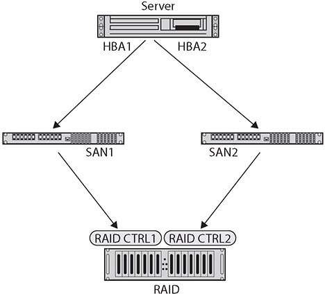

Table of Contents for
CompTIA Security+ All-in-One Exam Guide, Sixth Edition (Exam SY0-601)), 6th Edition
- Cover (01:09 mins)
- Title Page (01:09 mins)
- Copyright Page (03:27 mins)
- Dedication (01:09 mins)
- About the Authors (04:36 mins)
- Contents (19:33 mins)
- Preface (02:18 mins)
- Acknowledgments (01:09 mins)
- Introduction (12:39 mins)
-
Part I Threats, Attacks, and Vulnerabilities (01:09 mins)
- Chapter 1 Social Engineering Techniques (35:39 mins)
- Chapter 2 Type of Attack Indicators (37:57 mins)
- Chapter 3 Application Attack Indicators (33:21 mins)
- Chapter 4 Network Attack Indicators (39:06 mins)
- Chapter 5 Threat Actors, Vectors, and Intelligence Sources (44:51 mins)
- Chapter 6 Vulnerabilities (31:03 mins)
- Chapter 7 Security Assessments (23:00 mins)
- Chapter 8 Penetration Testing (25:18 mins)
-
Part II Architecture and Design (01:09 mins)
- Chapter 9 Enterprise Security Architecture (26:27 mins)
- Chapter 10 Virtualization and Cloud Security (25:18 mins)
- Chapter 11 Secure Application Development, Deployment, and Automation Concepts (27:36 mins)
- Chapter 12 Authentication and Authorization (33:21 mins)
- Chapter 13 Cybersecurity Resilience (39:06 mins)
- Chapter 14 Embedded and Specialized Systems (41:24 mins)
- Chapter 15 Physical Security Controls (49:27 mins)
- Chapter 16 Cryptographic Concepts (42:33 mins)
-
Part III Implementation (01:09 mins)
- Chapter 17 Secure Protocols (20:42 mins)
- Chapter 18 Host and Application Security (46:00 mins)
- Chapter 19 Secure Network Design (67:51 mins)
- Chapter 20 Wireless Security (25:18 mins)
- Chapter 21 Secure Mobile Solutions (43:42 mins)
- Chapter 22 Implementing Cloud Security (24:09 mins)
- Chapter 23 Identity and Account Management Controls (33:21 mins)
- Chapter 24 Implement Authentication and Authorization (37:57 mins)
- Chapter 25 Public Key Infrastructure (55:12 mins)
- Part IV Operations and Incident Response (01:09 mins)
- Part V Governance, Risk, and Compliance (01:09 mins)
- Part VI Appendixes and Glossary (01:09 mins)
- Glossary (65:33 mins)
- Index (67:51 mins)
CHAPTER 13
Cybersecurity Resilience
In this chapter, you will
• Examine the elements that create redundancy
• Understand the types of backups and the roles they play in resilience
Systems are designed to operate for a purpose, and we use the term risk to describe the outcomes when issues degrade performance from an optimal state. For a variety of reasons, expecting a system to run flawlessly, at all times, is unreasonable. We can put defenses in place to mitigate the issues that occur when a system is degraded, but it still raises the question of how one gets back to full performance. This is where resiliency comes in. A resilient system is one that can return to proper operating conditions after having something go wrong. And in today’s increasingly hostile environment, this is an important security measure.
Certification Objective This chapter covers CompTIA Security+ exam objective 2.5: Given a scenario, implement cybersecurity resilience.
Redundancy
Redundancy is the use of multiple, independent elements to perform a critical function, so that if one element fails, there is another that can take over the work. When developing a resiliency strategy for ensuring that an organization has what it needs to keep operating, even if hardware or software fails or if security is breached, you should consider other measures involving redundancy and spare parts. Some common applications of redundancy include the use of redundant servers, redundant connections, and redundant ISPs. The need for redundant servers and connections may be fairly obvious, but redundant ISPs may not be so, at least initially. Many ISPs already have multiple accesses to the Internet on their own, but by having additional ISP connections, an organization can reduce the chance that an interruption of one ISP will negatively impact the organization. Ensuring uninterrupted access to the Internet by employees or access to the organization’s e-commerce site for customers is becoming increasingly important.
Many organizations don’t see the need for maintaining a supply of spare parts. After all, with the price of storage dropping and the speed of processors increasing, why replace a broken part with older technology? However, a ready supply of spare parts can ease the process of bringing the system back online. Replacing hardware and software with newer versions can sometimes lead to problems with compatibility. An older version of some piece of critical software may not work with newer hardware, which may be more capable in a variety of ways. Having critical hardware (or software) spares for critical functions in the organization can greatly facilitate maintaining business continuity in the event of software or hardware failures.

EXAM TIP Redundancy is an important factor in both security and reliability. Make sure you understand the many different areas that can benefit from redundant components.
Geographic Dispersal
An important element to factor into the cost of the backup strategy is the expense of storing the backups. A simple strategy might be to store all your backups together for quick and easy recovery actions. This is not, however, a good idea. Suppose the catastrophic event that necessitated the restoration of backed-up data was a fire that destroyed the computer system the data was processed on. In this case, any backups that were stored in the same facility might also be lost in the same fire.
The solution is to keep copies of backups in separate locations. The most recent copy can be stored locally, as it is the most likely to be needed, while other copies can be kept at other locations. Depending on the level of security your organization desires, the storage facility itself could be reinforced against possible threats in your area (such as tornados or floods). A more recent advance is online backup services. A number of third-party companies offer high-speed connections for storing data in a separate facility. Transmitting the backup data via network connections alleviates some other issues with physical movement of more traditional storage media, such as the care during transportation (tapes do not fare well in direct sunlight, for example) or the time that it takes to transport the tapes.
Disk
Disks are the primary storage mechanism in a system, whether composed of physical hard drives with spinning platters or solid-state memory devices. The term disk refers to the spinning platter historically, but more and more storage is being handled by solid-state memory. Also, the logical construct of a disk can be mapped across multiple physical storage elements.
Redundant Array of Inexpensive Disks (RAID) Levels
A common approach to increasing reliability in disk storage is employing a redundant array of inexpensive disks (RAID). RAID takes data that is normally stored on a single disk and spreads it out among several others. If any single disk is lost, the data can be recovered from the other disks where the data also resides. With the price of disk storage decreasing, this approach has become increasingly popular to the point that many individual users even have RAID arrays for their home systems. RAID can also increase the speed of data recovery as multiple drives can be busy retrieving requested data at the same time instead of relying on just one disk to do the work.
Several different RAID approaches can be considered:
• RAID 0 (striped disks) simply spreads the data that would be kept on the one disk across several disks. This decreases the time it takes to retrieve data because the data is read from multiple drives at the same time, but it does not improve reliability because the loss of any single drive will result in the loss of all the data (since portions of files are spread out among the different disks). With RAID 0, the data is split across all the drives with no redundancy offered.
• RAID 1 (mirrored disks) is the opposite of RAID 0. RAID 1 copies the data from one disk onto two or more disks. If any one disk is lost, the data is not lost since it is also copied onto the other disk(s). This method can be used to improve reliability and retrieval speed, but it is relatively expensive when compared to other RAID techniques.
• RAID 2 (bit-level error-correcting code) is not typically used, as it stripes data across the drives at the bit level as opposed to the block level. It is designed to be able to recover the loss of any single disk through the use of error-correcting techniques.
• RAID 3 (byte-striped with error check) spreads the data across multiple disks at the byte level with one disk dedicated to parity bits. This technique is not commonly implemented because input/output operations can’t be overlapped due to the need for all to access the same disk (the disk with the parity bits).
• RAID 4 (dedicated parity drive) stripes data across several disks but in larger stripes than in RAID 3, and it uses a single drive for parity-based error checking. RAID 4 has the disadvantage of not improving data retrieval speeds since all retrievals still need to access the single parity drive.
• RAID 5 (block-striped with error check) is a commonly used method that stripes the data at the block level and spreads the parity data across the drives. This provides both reliability and increased speed performance. This form requires a minimum of three drives.
RAID 0 through 5 are the original techniques, with RAID 5 being the most common method used, as it provides both the reliability and speed improvements. Additional methods have been implemented, such as duplicating the parity data across the disks (RAID 6) and a stripe of mirrors (RAID 10). Some levels can be combined to produce a two-digit RAID level. RAID 10, then, is a combination of levels 1 (mirroring) and 0 (striping), which is why it is also sometimes identified as RAID 1 + 0. Mirroring is writing data to two or more hard disk drives (HDDs) at the same time—if one disk fails, the mirror image preserves the data from the failed disk. Striping breaks data into “chunks” that are written in succession to different disks.
EXAM TIP Knowledge of the basic RAID structures by number designation is a testable element and should be memorized for the exam. RAID 0 and RAID 1 both require a two-drive minimum. Both RAID 3 and RAID 5 have a three-drive minimum. RAID 10 (also called 1+0) requires four drives at a minimum.
Multipath
Between the storage systems and the server/computer is an I/O interface. This I/O interface converts the information from the computer to a form that works for the specific storage system. There are different interfaces for different types of storage systems (for example, RAID, SCSI, Fiber Channel, and SATA), each designed to deal with the necessary data transfers. When a storage element is connected by multiple adapters, this provides redundancy in the event of a problem with one of the adapters. This is referred to as a multipath connection and is commonly employed in high-reliability servers and critical systems. Figure 13-1 shows a server with two host bus adapters (HBAs), along with two storage area network (SAN) switches and two RAID controllers. This provides two independent paths from server to data.

Figure 13-1 Multipath configuration of a RAID device to a server
Network
A network is the infrastructure element that connects all the IT components in the enterprise. A network can serve as a point of failure, or it can be a system of redundant connections that can be resilient under various traffic loads and connectivity conditions. Having a properly architected network that has multiple independent pathways and infrastructure elements designed to increase redundancy is important. Two major elements to consider are load balancers and network interface card (NIC) teaming to remove some of the common modes of network-related traffic failures.
Load Balancers
Certain systems, such as servers, are more critical to business operations and should therefore be the object of fault-tolerance measures. A common technique used in fault tolerance is load balancing through the use of a load balancer, which moves loads across a set of resources in an effort not to overload individual servers. This technique is designed to distribute the processing load over two or more systems. It is used to help improve resource utilization and throughput but also has the added advantage of increasing the fault tolerance of the overall system since a critical process may be split across several systems. Should any one system fail, the others can pick up the processing it was handling. While there may be an impact to overall throughput, the operation does not go down entirely. Load balancing is often utilized for systems handling websites, high-bandwidth file transfers, and large Internet Relay Chat (IRC) networks. Load balancing works by a series of health checks that tell the load balancer which machines are operating and by a scheduling mechanism that spreads the work evenly. Load balancing is best for stateless systems, as subsequent requests can be handled by any server, not just the one that processed the previous request.
Network Interface Card (NIC) Teaming
If a server has multiple network interface cards (NICs) connecting it to a switch or router, it will have multiple addresses, one for each NIC. NIC teaming is an alternative means of connecting used by servers that have multiple network interface cards and wish to enjoy the benefits of load balancing, fault tolerance, and failover without requiring added infrastructure to do it. When NIC teaming is used, the OS combines the NICs into a virtual NIC from the OS perspective. If one or more of the connections have traffic issues or connectivity issues, the other NICs can carry the load. Using NIC teaming allows your server to have redundancy and increased bandwidth, even in the event any of your physical adapters or cabling fails.
EXAM TIP NIC teaming groups multiple NICs together to form a logical network device called a bond. This provides for load balancing and fault tolerance.
Power
Power is required for all machines to operate, and having a reliable and resilient source of electrical power is critical for continued operations of enterprise computing. Servers and networking equipment are always on, and even occasional outages due to equipment failures need to be planned for and managed to provide an appropriate level of service. In a modern enterprise, equipment such as uninterruptible power supplies, generators, dual supplies, and managed power distribution all support having the proper levels of electricity available to the networking equipment all the time.
Uninterruptible Power Supply (UPS)
Uninterruptible power supplies (UPSs) are power supply systems that can function using a temporary battery backup in the event of a power failure. UPSs typically do not have sufficient battery backup capability to last for long, but they are designed to keep equipment running while backup power, such as from a generator, is connected. In an enterprise system, most UPSs are designed and rated for typically 20 minutes of runtime. This is enough time for the backup generators to start, or in the event that power cannot be restored, for the servers to transfer to a secondary site as part of a continuity of operations plan and then to gracefully shut down.
Generator
Backup generators are used to provide power when normal sources of electricity are lost. The power for these devices is either natural gas or diesel, and they produce sufficient electrical power to cover the desired services during a power outage. Generators come with a host of requirements, including maintenance and testing, and they require significant electrical architecture work to isolate the desired circuits. The objective typically isn’t to provide power to everything that the normal power source supplies, as the scale of generation can be costly in some instances. The circuits energized by the backup generator are separate circuits that provide power to the desired components. Sizing of the backup generator is done with respect to the load, and because of the physical infrastructure, it is not easy or cost efficient to continuously resize the backup power. The other issue is that when long-term use happens in the case of diesel generators, a resupply of fuel needs to be managed. As these systems are typically used during natural disasters, having contracts in place that function during the disaster are important for refueling and maintenance operations.
Dual Supply
Individual pieces of equipment have power supplies in them to convert the line power in the facility to the voltages and currents used by the devices. The individual power supplies are one of the weakest links in a piece of equipment, as they tend to fail at a much higher rate than the lower-voltage equipment that they supply power to; hence, a plan needs to be in place for these when they fail. In cases where a minor outage is okay, having spare power supplies that can be replaced offline works.
For servers and other pieces of critical infrastructure, however, having a redundant, dual-supply system is essential. A dual supply is a system where two independent power supply units, either capable of handling the load, are used. In the event that either supply is lost, the other continues to carry the load. Typically, these devices are also made to be hot swappable, so in the event of a failure, the bad supply can be replaced without powering down the unit.
Managed Power Distribution Units (PDUs)
A managed power distribution unit (PDU) is a device designed to handle the electrical power for server racks. A fully populated server rack can use as much as 30kVA, or 10 times the amount of electricity for a typical home. This is why server rooms need special HVAC to handle the heat distribution, and they use managed power distribution units to efficiently handle the electrical side. A PDU can take three-phase 440/240VAC power in and convert it to either single-phase 110VAC or 48VDC power. The objective of a PDU is to efficiently convert the power, and manage the heat from the conversion, while producing a power flow that is conditioned from spikes and over/under voltage conditions. Most PDUs offer extensive monitoring capability, so entire racks of servers can have their power remotely monitored for conditions that might cause issues.
EXAM TIP Given a scenario, you should understand how each device is used to manage power and provide cybersecurity resilience.
Replication
Replication is a simple form of redundancy—that is, having another copy of something should something happen to the original. Dual power supplies replicate the power. Having a redundant array of disks to store data is another form of replication, as are backups and having offsite alternate operations for business continuity purposes. In situations where having something specific is essential, hearing someone say “two is one, and one is none” is a commonplace. Common ways of seeing replication in everyday enterprise operations include the use of storage area networks and virtual machine technologies.
Storage Area Network (SAN)
A storage area network (SAN) is a dedicated network that connects compute elements to storage elements. This network can be optimized for the types of data storage needed, in terms of size and data rates, in terms of format, and in terms of access criteria. Having the old-school model of the data stored on disks attached directly to a machine represents a failure mode when the machine fails. It also has issues when scaling to large quantities such as enterprise databases with multiple users. The SAN resolves this point of failure by making the data storage independent of any individual computer and can even interface to multiple redundant storage systems to allow redundancy on the side of data storage as well.
VM
Virtual machine (VM) technologies can enable replication of processing units that can be manipulated between different computers. Having a website with multiple identical servers to handle the load still has the issues associated with failures of individual servers and the rebuilding of those server components on the software side. VM technology resolves that by allowing multiple copies of a specific instance to be used on different hardware and with centralized monitoring and management. Need an extra web server because of the current system load? Just start another VM. It takes seconds as opposed to provisioning and building a server—a process measured in hours or days. VMs have revolutionized corporate computing operations because they allow administrators to manage the compute side easily by pointing and clicking to add or remove capacity and processing power using known-good images. Should a particular instance be modified by an unauthorized actor, a known-good replacement image can be established quickly, returning capacity to the enterprise. Also, the proper deployment of VMs and server technologies can provide hardware independence for specific operating images, enabling efficient use of server resources.
On-premises vs. Cloud
When you’re examining redundancy, one factor to consider is location. Is the work going to happen on the premises or is it being done in the cloud? By itself, this does not provide redundancy, but once the determination of location is made, then factors can be employed to ensure appropriate levels of redundancy based on risk.
Backup Types
A key element in business continuity/disaster recovery (BC/DR) plans is the availability of backups. This is true not only because of the possibility of a disaster but also because hardware and storage media will periodically fail, resulting in loss or corruption of critical data. An organization might also find backups critical when security measures have failed and an individual has gained access to important information that may have become corrupted or at the very least can’t be trusted. Data backup is thus a critical element in these plans, as well as in normal operation. There are several factors to consider in an organization’s data backup strategy:
• How frequently should backups be conducted?
• How extensive do the backups need to be?
• What is the process for conducting backups?
• Who is responsible for ensuring backups are created?
• Where will the backups be stored?
• How long will backups be kept?
• How many copies will be maintained?
Keep in mind that the purpose of a backup is to provide valid, uncorrupted data in the event of corruption or loss of the original file or the media where the data was stored. Depending on the type of organization, legal requirements for maintaining backups can also affect how it is accomplished.
There are four main forms of backups: full, incremental, differential, and snapshot. Each of these has advantages and disadvantages in terms of time to back up and restore as well as complexity. These backup types are described in the upcoming sections.
Understanding the purpose of the archive bit is important when you read about the backup types. The archive bit is used to indicate whether a file has (1) or has not (0) changed since the last backup. The bit is set (changed to a 1) if the file is modified, or in some cases, if the file is copied, the new copy of the file has its archive bit set. The bit is reset (changed to a 0) when the file is backed up. The archive bit can be used to determine which files need to be backed up when using methods such as the differential backup method.
EXAM TIP When learning about the following backup types, be sure to pay attention to the details concerning how many backups are needed for a restore. Here’s a typical exam question: “With this type of backup (differential or incremental) and a seven-day backup scheme, how many backup tapes are needed for a restore?” Note that this is not a simple case of memorization because you need the details from the scenario to answer the question. Also, you need to know the “order of restoration” of the backups.
Full
The easiest type of backup to understand is the full backup. In a full backup, all files and software are copied onto the storage media. Restoration from a full backup is similarly straightforward—you must copy all the files back onto the system. This process can take a considerable amount of time. Consider the size of even the average home PC today, for which storage is measured in tens and hundreds of gigabytes. Copying this amount of data takes time. In a full backup, the archive bit is cleared.
EXAM TIP A full backup copies all data and clears/resets the archive bit. This process takes considerable time to complete but allows for a complete restore with one tape.
Incremental
The incremental backup is a variation on a differential backup, with the difference being that instead of copying all files that have changed since the last full backup, the incremental backup backs up only files that have changed since the last full or incremental backup occurred, thus requiring fewer files to be backed up. With incremental backups, even less information will be stored in each backup. Just as in the case of the differential backup, the incremental backup relies on the occasional full backup being accomplished. After that, you back up only files that have changed since the last backup of any sort was conducted. To restore a system using this type of backup method requires quite a bit more work. You first need to go back to the last full backup and reload the system with this data. Then you have to update the system with every incremental backup that has occurred since the full backup. The advantage of this type of backup is that it requires less storage and time to accomplish. The disadvantage is that the restoration process is more involved. Assuming that you don’t frequently have to conduct a complete restoration of your system, however, the incremental backup is a valid technique. An incremental backup will clear the archive bit.
EXAM TIP To perform a restore from incremental backup, you need the last full backup and every incremental tape since the last full backup.
Snapshot
A snapshot is a copy of a virtual machine at a specific point in time. A snapshot is created by copying the files that store the virtual machine. One of the advantages of a virtual machine over a physical machine is the ease with which the virtual machine can be backed up and restored—the ability to revert to an earlier snapshot is as easy as clicking a button and waiting for the machine to be restored via a change of the files.
Differential
In a differential backup, only the files that have changed since the last full backup was completed are backed up. This also implies that periodically a full backup needs to be accomplished. The frequency of the full backup versus the interim differential backups depends on your organization and needs to be part of your defined strategy. Restoration from a differential backup requires two steps: the last full backup first needs to be loaded and then the last differential backup performed can be applied to update the files that have been changed since the full backup was conducted. Again, this is not a difficult process, but it does take some time. The amount of time to accomplish the periodic differential backup, however, is much less than that for a full backup, and this is one of the advantages of this method. Obviously, if a lot of time has passed between differential backups, or if most files in your environment change frequently, then the differential backup does not differ much from a full backup. It should also be obvious that to accomplish the differential backup, the system has to have a method to determine which files have been changed since some given point in time. The archive bit is not cleared in a differential backup since the key for a differential is to back up all files that have changed since the last full backup.
EXAM TIP To perform a restore from differential backup, you need the last full backup and the most recent differential backup tape.
The amount of data that will be backed up, and the time it takes to accomplish this, has a direct bearing on the type of backup that should be performed. The following table outlines the three basic types of backups that can be conducted, the amount of space required for each, and the ease of restoration using each strategy.
There are times when each of these methods makes sense. If you have a large amount of data, but most is static (changes slowly if ever), then the small changes are best captured with differentials. If the whole data structure is changing, then full backups make more sense. Understanding the data is part of the key to understanding the correct mechanisms for backup and restore.
Tape
Tape drives are an older form of data storage mechanism, and they are characterized by their sequential read/write access. A disk allows you to directly access specific elements randomly, whereas a tape system stores everything in one long structure, requiring you to physical move the tape if you wish to access an element halfway through the storage. For general-purpose storage, this sequential access mechanism tends to create significant performance issues. But for backups and restores, these operations are sequential in nature, and thus tape is still well suited for this type of operation. For bulk storage of backups, tape is still a viable alternative in terms of cost and performance.
Disk
The term disk refers to either a physical hard drive with spinning platters or a solid-state memory device. Backing up a disk is a common operation for a single computer because most computers have very few disks, and this is a logical structure to maintain and restore. For client-based PCs, a disk backup can make sense, and many systems can perform a full, incremental, snapshot, or differential backup of a disk.
Copy
Copying is the simplest form of backup for a file or set of files. Users can use this option with ease, as the scope of their data backup requirement is typically small (for example, saving a copy of a critical document or an important picture). However, this method breaks down when the scope expands to larger and larger sets of data, and for large-scale backups, one of the previous methods is more efficient both for backing up and restoring. One of the advantages of having users make copies of critical documents is the ability to do a quick restore in the event of an overwrite error.
Network Attached Storage (NAS)
Network attached storage (NAS) is the use of a network connection to attach external storage to a machine. This is a simple method of extending storage, and the connection can be managed over either a USB connection or the Ethernet network connection. In either case, NAS is a simple extension of data storage to an external system, and typically these devices do not transfer data fast enough for regular operations. However, they do work well as an external site for data-backup-and-recover solutions on a smaller, single-machine scale.
Storage Area Network (SAN)
As mentioned previously, a storage area network (SAN) is a dedicated network that connects compute elements to storage elements. This network can be optimized for the types of data storage needed, in terms of size and data rates, in terms of format, and in terms of access criteria. Using a SAN as part of a backup solution is a good example of using technology to solve complex problems. Multiple different servers across the enterprise can connect via a SAN to a backup array, enabling efficient and effective backups in a manageable and flexible manner.
EXAM TIP NAS is a single storage device that serves files over the network to a machine. It’s a simple form of external storage. A SAN, on the other hand, is a network of multiple devices designed to manage large and complex sets of data in real time at processor speed.
Cloud
Just as NAS and SANs can be used as locations to store data backups, so can the cloud. Numerous cloud-based backup security vendors and products place the data storage of a backup in the cloud. The advantages are all of the cloud advantages: offsite, can have multiple redundant copies, and available via the Web for recovery. The disadvantages are the same: the backup is on another box and it is protected only by the legal agreement between the user and the backup vendor. Also, these contracts tend to favor the backup vendor, not the client. So while the cloud can result in less on-premises administration of data, it can increase security concerns because someone else is protecting the data, under the guidelines of a contractual document that may or may not reflect current risk postures.
It is important to realize that cloud storage has invaded the desktop of many users. The wide range of basic cloud sync providers includes Dropbox, Box, Microsoft OneDrive, Google Drive, and iCloud, as well as many lesser-known entities. Understanding the risk associated with data in these situations matters in a corporate environment because what might be convenient or seem like a good idea from a user perspective might put data at risk of disclosure.
Image
An image-based backup is a specific structure of the backup file to match that of the system being backed up. This may take more time and space, but it is also guaranteed not to miss anything because it backs up everything, including the deleted data and free space. For critical systems, this provides a complete capture of the system as it was at the time of backup, including all nonpersistent data associated with the OS. Image backups can provide extra levels of assurance when certain types of failures (due to a malware attack, for example) leave a system unusable.
Online vs. Offline
Online backups are those that are stored in a location that is accessible via the Internet. This provides flexibility in recovery by making the backup data available anywhere there is a network connection. Offline backups are those stored on an offline system that is not accessible via the Internet. Online backups have the advantage of providing geographic separation of the backups from the original system.
Offsite Storage
Offsite backups are ones stored in a location separate from the system being backed up. This can be important in regard to problems that affect an area larger than a single room. A building fire, a hurricane, a tornado—these are all disasters that occur frequently and typically affect more than just a single room or building. Having backups offsite alleviates the risk of losing the backups to the same problem. In today’s high-speed network world with cloud services, storing backups in the cloud is an option that can resolve many of the risks and issues associated with backup availability.
Distance Considerations
The distance associated with an offsite backup is a logistics problem. If you need to restore a system and the backup is stored hours away by car, that increases the recovery time. The delay resulting from physical movement of backup tapes has been alleviated in many systems through networks that move the data at the speed of the network. Distance is also critical when examining the reach of a disaster. It is important that the offsite location is far enough away that it is not affected by the same incident. This includes the physical location of a cloud storage provider’s servers. If your business is in Puerto Rico and so is your cloud provider’s servers, for example, Hurricane Maria likely made your data unavailable for a long time.
Nonpersistence
Nonpersistence refers to system items that are not permanent and can change. An example of something that is nonpersistent is the registry in Microsoft Windows, which is a dynamic list of configuration criteria. Nonpersistence needs to be appropriately managed, and systems that have this characteristic typically have mechanisms built in to manage this diversity. For VMs, where the current state of the system is continually changing, and thus the image is changing, we have snapshots. Snapshots provide a copy of the system at a point in time that you can then persist to use as a recovery point or backup.
EXAM TIP In the event of a failure in a nonpersistent system, all data is lost. The resilience and recovery of those conditions must occur from external sources. Think memory when you turn off your computer; it must be reloaded when you restart.
Revert to Known State
Things eventually go wrong, and when something goes wrong, you want to recover to a known point. Having the ability to recover to a known state is referred to as reverting to a known state. Modern OSs are a prime example of nonpersistence; they are regularly changing with new data, new software, new configurations, new drivers, and so on. While data backups can bring back the data elements of a system, bringing back the configuration of a system, including driver files and patches, is more complicated. How do you recover a system after a patch goes awry, or a new driver brings a level of instability? Many OSs have the ability to roll back to a previous known configuration: both servers and desktops can be rolled back, restoring the system to a previous point in time while leaving the files intact—back to a condition where the OS previously worked properly.
Last Known-Good Configuration
When you have a system without persistence, you need a means to recover to a known-good state. On a boot failure, Microsoft Windows can give you an option to revert to the last known-good configuration, which is a means of reverting to a known state. In Windows 7, this was a direct menu option. In Windows 10, this option is buried under the Windows Recovery system. The methods of accessing it vary based on the type of issue, and whether or not you can get into Windows itself. If Windows fails on three subsequent boots in sequence, it will present you with recovery options rather than trying to boot again.
Live Boot Media
One means of beginning with a known configuration and a known state is to boot to live boot media, which is a bootable flash drive or DVD source that contains a complete bootable image of the OS. Using this as a means of starting in a known state is common in digital forensics investigations.
High Availability
One of the objectives of security is the availability of data and processing power when an authorized user desires it. High availability refers to the ability to maintain the availability of data and operational processing (services) despite a disrupting event. Generally this requires redundant systems, both in terms of power and processing, so that should one system fail, the other can take over operations without any break in service. High availability is more than data redundancy; it requires that both data and services be available.
EXAM TIP Fault tolerance and high availability are similar in their goals, yet they are separate in application. High availability refers to maintaining both data and services in an operational state, even when a disrupting event occurs. Fault tolerance is a design objective to achieve high availability should a fault occur.
Scalability
Scalability is a design element that enables a system to accommodate larger workloads by adding resources either making hardware stronger (scaling up) or adding additional nodes (scaling out). This term is commonly used in server farms and database clusters, as these both can have scale issues with respect to workload. Both elasticity and scalability have an effect on system availability and throughput, which can be significant security- and risk-related issues.
EXAM TIP Elasticity and scalability seem to be the same thing, but they are different. Elasticity is related to dynamically scaling a system with workload (scaling out), whereas scalability is a design element that enables a system both to scale up to more capable hardware and to scale out to more instances.
Restoration Order
Data restoration operations are designed to take an alternative copy of the data and put it back into a working system. If you back up a database and then later need to use the backup to restore the database, this is data restoration. But the order of restoration can make a difference. If you have a large database that takes days to back up and restore, then having a backup solution that allows you to restore the selected parts most needed faster can be a lifesaver. This is not just a technology issue; it requires planning and coordination because the most important data needs to be identified and then backed up in a manner that facilitates its quick restore. Developing a restoration plan, along with an order of what needs to be restored first, second, and so on, is important because this will drive certain operations when backing up the data in the first place.
Diversity
Most failures come from a series of common causes, either in the environment or the equipment. If you have a bunch of identical equipment, the advantage is you can have spares for the commonly known issues. The disadvantage is that these commonly known problems tend to affect all of the systems. Having a monoculture of all OSs being identical adds efficiency to patching, but it also adds risk in common failure modes across the entire enterprise. Having diversity in technologies, vendors, processes, and controls can assist in resiliency through differences in failure modes. The virus that hurts one OS typically has no effect on another. Building diversity into systems to allow parallel operations using different technologies, vendors, processes, and controls can provide a means to continue operation even during times of systems failures.
Technologies
The security industry has multiple technologies that can be employed across the enterprise in an effort to mitigate security risk. Employing the concept of defense in depth, it is best practice not to use a single technology, but to use several different technologies in an overlapping fashion, forcing an attacker to bypass them all to achieve their objective. Having firewalls, ACLs, bastion hosts in a screened subnet (DMZ), and network monitoring is an example of multiple technologies designed to detect unauthorized network activity. Having a diverse set of these elements improves the chances of catching an attacker, even when they can beat one or two control elements.
Vendors
Different vendors approach security problems with different methodologies, different toolsets, different policies and procedures, and different technologies. Adversaries have developed methods of beating different vendors, but if multiple vendors are brought into play, this makes it all that much more difficult for an adversary to bypass all of the employed options. Having diversity in the vendors used for security prevents vendor-specific forms of single points of failure and creates a more robust set of defensive capabilities.
Crypto
For cryptographic solutions to work, both sides must agree on algorithms, keys, and other parameters, but diversity can still exist in this environment. A prime example is in the TLS cipher suite, a set of different crypto protocols, preassigned to facilitate flexibility in establishing a connection. When you establish a TLS-enabled connection, the server and client both negotiate a selection of protocol parameters from the preassigned list, enabling a secure connection to be established. The same server with a different host, doing the same exercise, can end up with different crypto choices, but in the end it’s still a secure connection. Having multiple options configured and available enables the removal of one if something affects it, while still providing a means of connecting via alternative options.
Controls
Defense in depth is a security principle where multiple layers of different security mechanisms are used to ensure catching a risk. This is the use of diversity in controls. Modern networks employ not just a firewall but also a screened subnet (DMZ), bastion hosts, and ACLs, all working together in a coordinated fashion to make bypassing the entire suite of controls nearly impossible.
EXAM TIP Diversity is about having multiple different sets of controls to provide for risk mitigation. Diversity should be practiced in all aspects and used to enhance security. A performance-based question that considers diversity should be examined in light of which element is most efficient to manipulate—technologies, vendors, crypto, or controls—and the answer is found in the specifics of the question.
Chapter Review
In this chapter, you became acquainted with the aspects of cybersecurity resilience. The chapter opened with an examination of elements that lead to redundancy, such as geographic dispersal; disks, including RAID and multipath solutions; network redundancy from load balancers and NIC teaming; and power supply concerns, including UPSs, generators, dual supplies, and PDUs. The issues around replication using both SAN and VMs were covered, as was a comparison of on-premises and the cloud.
The topic of backups was covered, including the backup methodologies of full, incremental, snapshot, and differential. Backup technologies of tape, disk, copy, NAS, SAN, cloud, and image were presented as well. An examination of online versus offline backup locations was provided, including offsite storage and distance considerations.
The issues associated with nonpersistence, including reverting to a known state, last known-good configuration, and live boot media, were covered. An examination of high availability and scalability as well as restoration order followed. The chapter concluded with a consideration of diversity and how diversity in technology, vendors, crypto, and controls can be used to mitigate risk.
Questions
To help you prepare further for the exam, and to test your level of preparedness, answer the following questions and then check your answers against the correct answers at the end of the chapter.
1. Which backup strategy includes only the files and software that have changed since the last full backup?
A. Incremental
B. Full
C. Snapshot
D. Differential
2. Which backup strategy focuses on copies of virtual machines?
A. Incremental
B. Full
C. Snapshot
D. Differential
3. When discussing location for storage of backups, which of the following statements are true? (Choose all that apply.)
A. The most recent copy should be stored offsite, as it is the one that is most current and is thus the most valuable.
B. Offsite storage is generally not necessary, except in cases where the possibility of a break-in at the main facility is high.
C. Offsite storage is a good idea so that you don’t lose your backup to the same event that caused you to lose your operational data and thus need the backup.
D. The most recent copy can be stored locally, as it is the most likely to be needed, while other copies can be kept at other locations.
4. To deal with nonpersistence in a system, which of the following items offer risk mitigation? (Choose all that apply.)
A. Image backups
B. Cloud
C. Last known-good configuration
D. Revert to a known state
5. To have easily available quick backup of critical user documents, which of the following is recommended for backing these items up?
A. Differential
B. Snapshot
C. Copy
D. NAS
6. You have offices in six locations across town and wish to utilize a common backup restore methodology. Which would be the most efficient solution for your small offices?
A. SAN
B. NAS
C. Cloud
D. Offline
7. Which of the following statements is true about redundancy?
A. It prevents failures.
B. It is complicated and expensive to do.
C. It applies only to hardware.
D. It can be done across many systems.
8. What distinguishes high availability systems?
A. The ability to change with respect to usage conditions
B. The ability to process, even in times of disruption
C. Automated backups and recovery functions
D. The use of diversity to mitigate single threats
9. The continual changing of information in a system is referred to as what?
A. Nonpersistence
B. Snapshots
C. Differentials
D. Images
10. A PDU provides management of what in an enterprise?
A. Redundant backup processing
B. Power distribution to servers
C. Improved network connection to data storage
D. Load balancing
Answers
1. D. In a differential backup, only the files and software that have changed since the last full backup was completed are backed up. The incremental backup is a variation on a differential backup, with the difference being that instead of copying all files that have changed since the last full backup, the incremental backup backs up only files that have changed since the last full or incremental backup occurred, thus requiring fewer files to be backed up. In a full backup, all files and software are copied onto the storage media. Snapshots refer to copies of virtual machines.
2. C. Snapshots refer to copies of virtual machines. The incremental backup is a variation on a differential backup, with the difference being that instead of copying all files that have changed since the last full backup, the incremental backup backs up only files that have changed since the last full or incremental backup occurred, thus requiring fewer files to be backed up. In a full backup, all files and software are copied onto the storage media. In a differential backup, only the files and software that have changed since the last full backup was completed are backed up.
3. C and D. Offsite storage is a good idea so that you don’t lose your backup to the same event that caused you to lose your operational data and thus need the backup. Additionally, the most recent copy can be stored locally, as it is the most likely to be needed, while other copies can be kept at other locations.
4. A, C, and D. Image backups capture the nonpersistence of the OS. Also, reverting to a known state and using the last known-good configuration both can resolve nonpersistence issues. Cloud (answer B) is not a direct answer, as by itself, the cloud does not offer persistence to a nonpersistent system. An image backup has everything, so restoring from it can resolve a persistence problem. For the cloud to be involved, it would be as a secondary item (that is, a place to store an image backup), but then it is not actually directly involved.
5. C. User-managed copies on external media of critical documents can make it very easy for the end user to manage recovery in a quick manner.
6. C. Cloud backup solutions can be ideal for small offices, and with the different offices, centralized administration can be added.
7. D. A wide range of options are associated with creating redundant systems—some as simple as configuration elements and system choices.
8. B. High availability systems continue to process data even when disrupting events occur.
9. A. Nonpersistence refers to system items such as memory and registry elements that are not permanent and can change over time, even while running.
10. B. Power distribution units provide a centralized means of managing and monitoring the power delivered to servers in a rack.